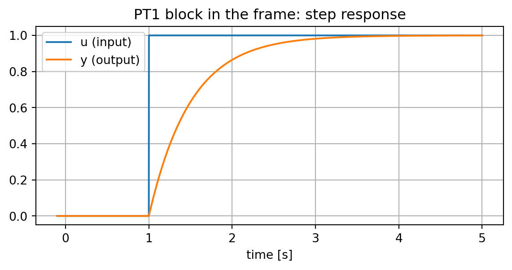

Isolated Testing of Dynamic Model Blocks (DSL/Modelica)
Before wiring a dynamic model block - a DSL block definition (BlkDef) or a compiled Modelica model type (TypMdl) - into a network, it pays to exercise it in isolation first: drive its inputs with a defined time profile, run a standalone RMS simulation, and inspect the response, independently of any grid, load or other model it will eventually be connected to. powfacpy.applications.frame_test and powfacpy.applications.modelica provide the testers for this; this tutorial shows both ways to drive the inputs:
inside the shipped BlockDefinitionTesting composite frame (BlockDefinitionFrameTest for a BlkDef, ModelicaModelFrameTest for a TypMdl) - the input is an arbitrary piecewise-linear signal, so true ramps work too;
for a Modelica model directly, with no frame at all (ModelicaModelTest) - the simpler setup, but the input can only be a step change.
Both return the monitored signals as a pandas.DataFrame.
import sysimport jsonimport numpy as npimport pandas as pdwithopen(r"..\..\settings_local.json") as settings_file: SETTINGS = json.load(settings_file)sys.path.append(SETTINGS["local path to PowerFactory application"])import powerfactoryapp = powerfactory.GetApplication()app.Show()app.ActivateProject(r"powfacpy\control_block_testing")
0
1 Testing inside the frame
The shipped BlockDefinitionTesting composite frame (project control_block_testing) wires three slots: Input - a DSL lookup-table signal generator that linearly interpolates between given breakpoints (lapprox) - the device under test (BlockDefinitionTested), and Sink, which terminates the outputs. BlockDefinitionFrameTest and ModelicaModelFrameTest place a BlkDef or TypMdl in the device slot and wire it up; set_input_signals({input_name: {time: value, ...}}) defines every input as piecewise-linear breakpoints, and run(monitor, tstop) runs the RMS simulation and returns the monitored signals.
1.1 A DSL block definition (BlkDef)
As a minimal example, take a first-order lag (PT1): y' = (u - x)/T, created here directly from Python instead of the GUI.
fig, ax = plt.subplots(figsize=(7, 3))ax.plot(pt1_result.index, pt1_result["u"], label="u (input)")ax.plot(pt1_result.index, pt1_result["y"], label="y (output)")ax.set_xlabel("time [s]")ax.legend()ax.set_title("PT1 block in the frame: step response")
Text(0.5, 1.0, 'PT1 block in the frame: step response')

1.2 A Modelica model type (TypMdl)
The Modelica model is the load-shedding controller from the Importing Modelica Models tutorial - here only its input f (frequency) and output kShed (shed fraction) matter, nothing about its internal logic.
2 Testing a Modelica model directly, without the frame
ModelicaModelTest runs a compiled Modelica model type on its own, as a standalone ElmMdl with no frame and no slots. Its inputs are stepped with parameter events (EvtParam) instead of the frame’s lookup table, so only step changes are possible - a real ramp cannot be represented this way. It needs nothing beyond a grid and a study case, though. Reusing the same frequency step as above lets us check that the two testers agree:
Use ModelicaModelFrameTest (or BlockDefinitionFrameTest for a BlkDef) whenever a check needs a real ramp or anything rate-sensitive (e.g. a RoCoF stage); otherwise ModelicaModelTest is the simpler setup, needing only a grid and a study case.